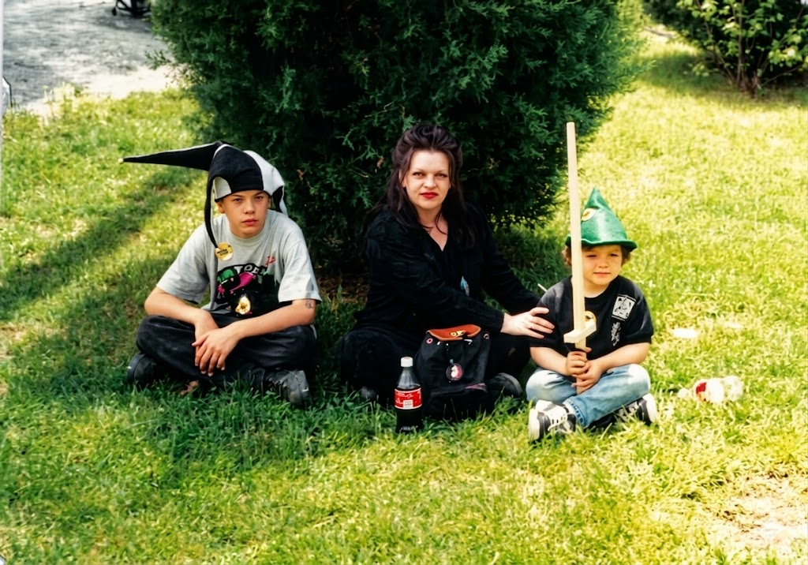
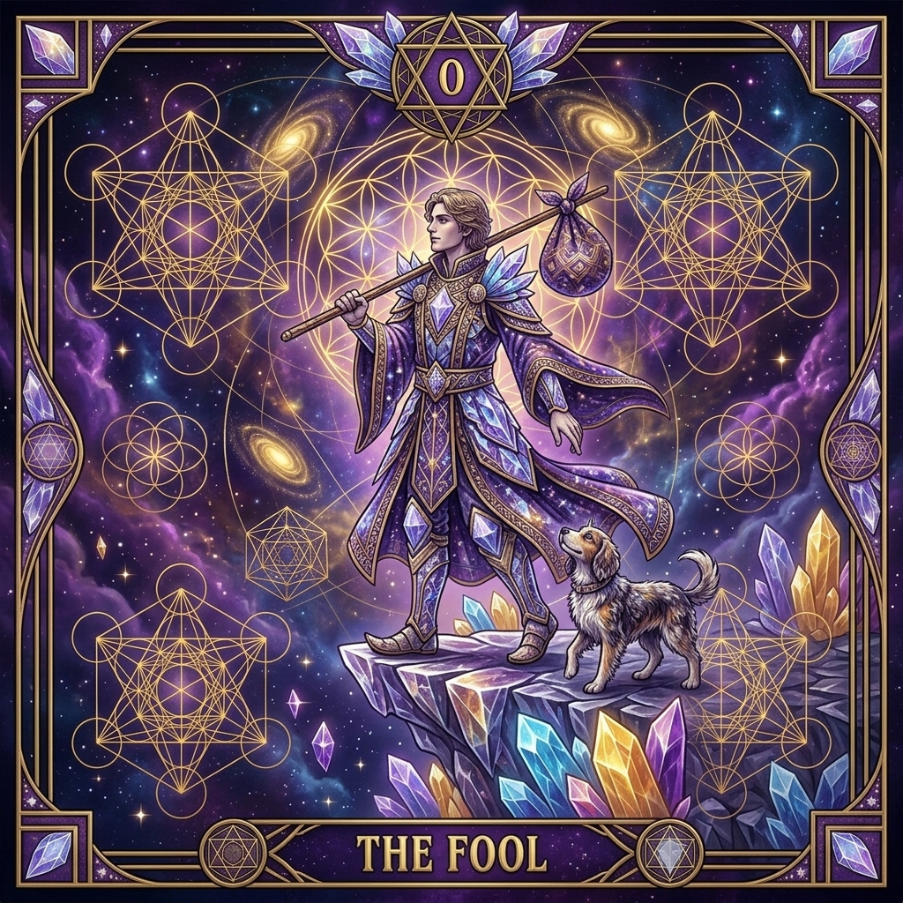
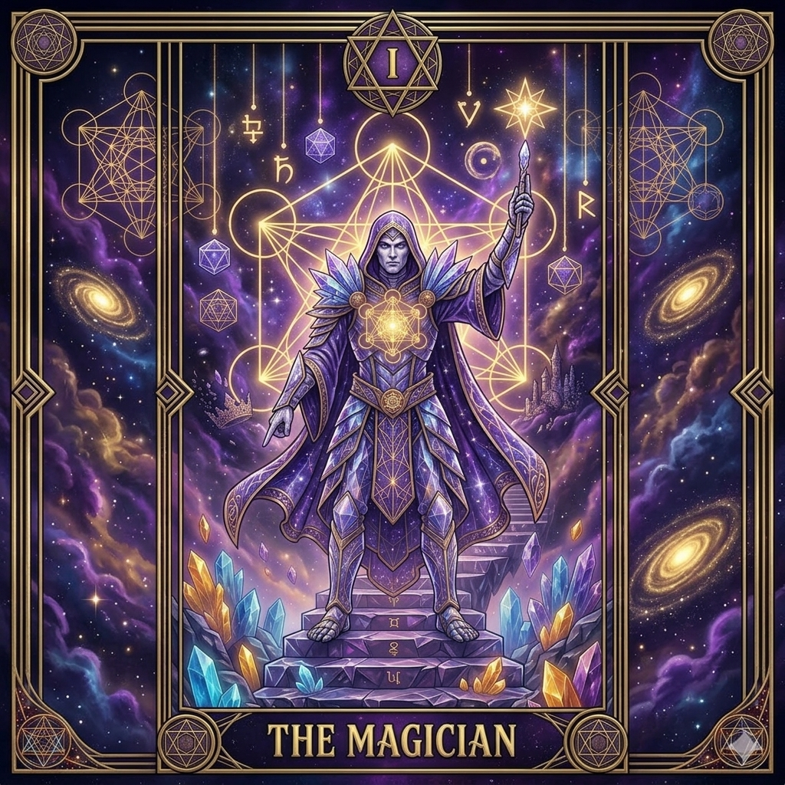
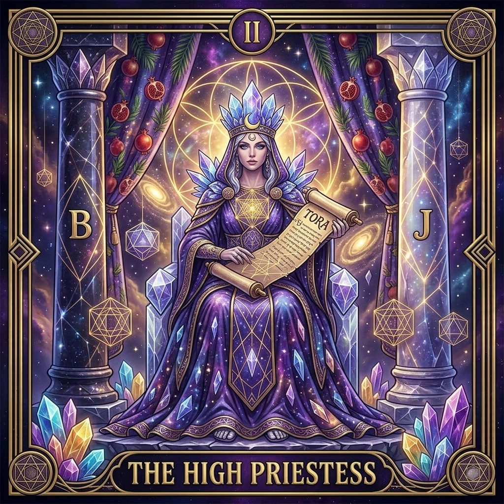
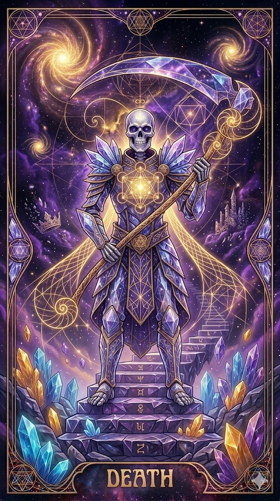

The Warrior's Legacy

The three people in the image from left to right is Brandon Larkin, Helen Larkin, and Nicholas Larkin. Both of my brothers once told me I was a calm kid, and she posed like this not to hold me still but to say: "I'm proud of him, Nicholas is going to grow up to be great one day, this is the warrior."
I was told this by my brother as he held back tears. Maybe she knew I'd be the last one to survive the entire family tragedy, and carry on her legacy.
The Origins
Before it was a digital engine, Shadowlark was a manifestation of the physical world. The name traces back to a sacred Wiccan herbal and crystal shop in Waldorf, MD, owned by the programmer's mother. It was a space where ritual, intent, and the natural cycles of the earth intersected.
Today, that lineage continues through code. The Oracle is not merely a program; it is a mathematical ritual disguised as software. It carries the vibration of that original space into the digital void.
The Visual Arcana
The digital Oracle inherits the visual soul of the deck. Each of the Major Arcana has been mathematically rendered to reflect its specific numerical polarity.




Sacred Determinism
In the Oracle's engine, nothing is random. Chance is considered an illusion of insufficient data. Every input you provide—be it your name or a deep question—acts as a key that unlocks a predetermined geometric collapse.
- The Word is the Code: Letters are broken into Pythagorean digits (1-9).
- The Spiral is the Pulse: Spacing is measured against the Fibonacci sequence.
- The Synthesis is the Truth: Inference is constrained by numerical polarity.
The Pillars of Reality
🔥 Fire
Initiation, will, and the spark of creation. (Numerical 1 & 5)
💧 Water
Emotion, the divine feminine, and the silver thread. (Numerical 2 & 6)
💨 Air
Communication, the triple goddess, and the sword of truth. (Numerical 3 & 7)
🌍 Earth
Stability, sacred foundations, and the builder's square. (Numerical 4 & 8)
✨ Spirit
The Royal Arch, completion, and the infinite spiral beyond the numbered veil. (Numerical 9)